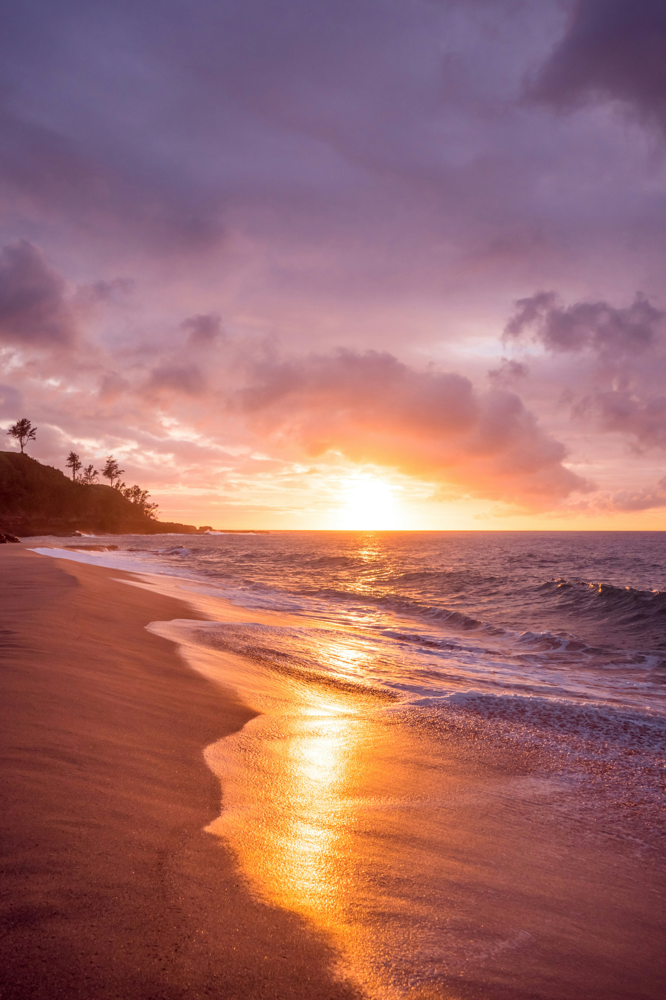

Um verdadeiro paraíso litorâneo do estado de
São Paulo
Navegue e conheça nossas belas cidades acessando nosso menu Cidades

Orla extensa, ciclovias modernas e uma das praias mais organizadas da região.
História, porto movimentado e o famoso maior jardim de orla do mundo.
A primeira cidade do Brasil, com tradição histórica e belas paisagens.
Natureza preservada, praias tranquilas e acesso à Estação Ecológica da Juréia.
Clima calmo, pesca tradicional e o maior plataforma de pesca da América Latina.
Rica em história colonial, rios e praias com cenários únicos.
Conhecida como Pérola do Atlântico, com praias paradisíacas e vida noturna ativa.
Importante polo industrial cercado pela Serra do Mar e áreas de preservação.
Destino de natureza e aventura, com trilhas, rios e praias preservadas.
Somos um grupo de estudantes do curso de Análise e Desenvolvimento de Sistemas Integrado ao Ensino Médio na ETEC de Praia Grande - SP.
Somos moradores da baixada santista e temos como objetivo apresentar as cidades que compõem a região, destacando suas características, pontos turísticos e atrativos para quem deseja morar ou visitar a Baixada Santista.
Esse site foi totalmente desenvolvido por nós para um trabalho da ETEC, mas nosso objetivo também é compartilhar informações sobre a região tão bela onde nós moramos e incentivar mais pessoas a conhecerem e aproveitarem as cidades da baixada santista.
Nicolas Marcos da Silva - Desenvolvedor Full Stack Junior e Designer
Gustavo Emanuel Ramalho de Oliveira - Desenvolvedor Frontend Junior
Tiago Albert Gomes de Oliveira - Desenvolvedor Frontend Junior
Isaac Santos Pereira - Desenvolvedor Frontend Junior